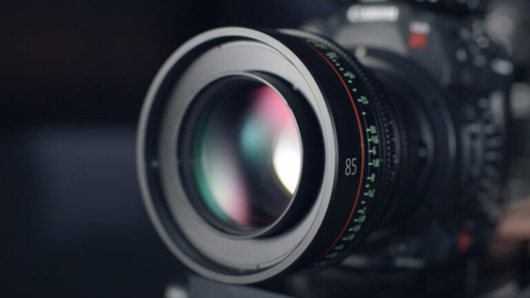

Menjadi Fotografer Handal Hanya Dalam Waktu Seminggu
Anda ingin membuat karya fotografi yang bagus? Mau pintar memotret, mengambil gambar apa saja dan di mana saja keren?
Mungkin Anda merasa dalam membuat karya fotografi masih begitu-begitu saja. Belum ada perkembangan.
Mungkin bukan karena kamera atau alat yang Anda gunakan itu tidak bagus, mungkin saja ada beberapa hal yang Anda kurang pahami dalam fotografi.
Kalau Anda mendapatkan artikel ini, ada beberapa hal yang bisa Anda pelajari dari awal belajar fotografi. Mulai dari pengenalan teknis sampai pada menciptakan foto yang keren.
Berdasarkan pengalaman saya terdapat beberapa hal yang bisa kita pelajari terlebih dahulu dalam dunia fotografi.
Dalam artikel ini akan membahas tentang :
Yuk kita bahas satu per satu…

Ada satu pepatah yang harus diingat bahwa
Kamera yang bagus adalah kamera yang Anda miliki saat ini
Kamera adalah sebuah “kotak hitam” yang berfungsi untuk merekam objek yang ada di depannya
Itu adalah konsep pertama saat kamera diciptakan, yang disebut juga dengan nama kamera obscura.
Kotak hitam pada kamera merupakan area dimana pada ruang tersebut berfungsi sebagai sebagai ruang exposure, dimana ruang masuknya cahaya lalu ditangkap oleh media perekam yang ada di dalamnya.
Media perekam tersebut dulunya disebut dengan istilah film / klise sekarang menjadi sensor digital.
Lensa merupakan komponen kamera yang selalu menempel di depan kamera yang berfungsi sebagai tempat masuknya cahaya.
Lensa memiliki element penting untuk membuat gambar lebih fokus yang disebut dengan diafragma yang ditandai dengan F/ (bacanya F stop)
Diafragma atau yang disebut juga dengan istilah bukaan memiliki komponen penyusun yang disebut dengan IRIS.
Iris terdiri dari susunan lempengen tipis yang berbentuk bulat yang berada di dalam lensa yang ukurannya bisa berubah-ubah sesuai dengan besar kecilnya angka F/ yang ditentukan.
Intinya Diafragma bisa diatur besar kecilnya, sesuai kebutuhan, dan teknik fotografi yang ingin digunakan. Jika anda belum paham ini, tenang, di website ini akan dibahas secara singkat dan padat.
Contohnya lensa dengan bukaan f/1.4 memiliki bukaan yang lebih besar daripada f/11.
Demikian artikel ini saya akhiri.
Kesimpulan akhir dari artikel ini adalah dalam membuat karya fotografi kita harus ketahui dulu prinsip kerja kamera kita, kenali komponen dan aksesoris kamera Anda.
Kemudian belajar mengenai kompisisi fotografi.
Teruslah latihan sampai dapat foto yang bagus, baik dari segi exposure nya sampai pada komposisinya. Karena sesuatu yang bagus itu tidak tercipta secara instant.
Setelah itu jika Anda ingin memaksimalkan hasil foto Anda, Anda bisa belajar editing foto.
Jika semua hal tersebut Anda kuasai, saya harap Anda akan senang dengan hasil foto yang Anda ciptakan sendiri.
Artikel ini hanyalah tulisan berdasarkan pemahaman dan pengalaman pribadi saya. Admin bukanlah orang yang lulus di sekolah fotografi. Jadi kalau artikel ini anda gunakan sebagai rujukan, pikir-pikir dahulu.
Jika dirasa bermanfaat silahkan bagikan artikel ini kepada teman-teman anda yang baru belajar fotografi.
Saya tunggu komentar anda tentang fotografi pada kolom kontak.